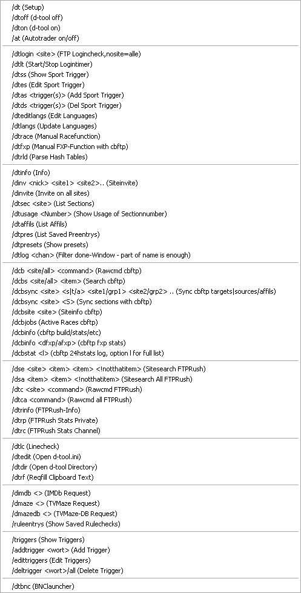

|
COMMANDS
AT-Steuerung:
/dt - Setup öffnen
/dtoff - d-tool ausschalten
/dton - d-tool anschalten
/at - Autotrader an- bzw ausschalten
_____________________________________________________________
/dtq - Alle Queue in FTPRush löschen
/dtlogin <site> - FTP Logincheck, keine Siteangabe = alle Server
/dteditsport - Sport Trigger bearbeiten
/dtshowsport - Sport Trigger anzeigen
/dtrace - Manuelle Racefunktion
Vorher Release in die Zwischenablage kopieren und Sektion merken
/dtfxp - Manuelle FXP-Funktion per cbftp
_____________________________________________________________
/dtinfo - Informationen über die Siteeinstellungen
/dtlog <> - done Fenster nach Eingabe filtern
zB. Sitenchan, dann wird angezeigt was man auf einer bestimmten Site angestellt hat
/dtsections <site> - Sektionen listen
/dtaffils - Affils aller Sites anzeigen lassen
/dtpres - Derzeit gespeicherte Preeinträge anzeigen lassen
/dtpresets - Presetdialog öffnen
/dtrinfo - Infofunktion vom Server abrufen, falls d-tool noch auf einem Server läuft
/dtrp - Private Rushstats
/dtrc - Rushstats im Channel posten
_____________________________________________________________
/dse <sitename> <suchwörter> - Sitesearch-Funktion
Sitenamen so angeben wie er in Rush ist
/dsa <suchwörter> - Globalsuche
/dtc <site> <command> - RAWCommand auf der Site ausführen
/dtca <command> - RAWCommand auf allen Sites ausführen
/dtcb <site> <command> - RAWCommand cbftp (single line response, fast)
Wenn man nur Stats abfragen will emfiehlt sich dieser command
direkt über die udp api von cbftp, wenn die Antwort mehrere Zeilen
erfordert, wie z.B. eine Suche, dann muss man die nächsten Befehle
nutzen. Diese gehen dann über JSON, lassen mIRC kurz etwas durchdrehen,
dann hat man seine Ergebnisse.
/dsc <site> <item> - Siteseach cbftp/json
/dsca <item> - Siteseach all cbftp/json
/dcc <site> <command> - RawCommand cbftp/json
/dcca <command> - RawCommand all cbftp/json
/dinv <nick> <site1> <site2> ... - Invite auf einer oder mehrere Sites
/dinvite - Invite auf allen Sites, falls die IRC-Nicks in den Siteeinstellungen stehen
/dtlc - Linecheck
Für die Nummern der Wörter im Release, da die wegen Farbcodes
etc. manchmal so nicht zählbar sind. Bevor man den Befehl
benutzt, muss man die komplette Zeile des NEW-Announce mit Farbcodes
etc. kopieren indem man beim markieren Strg drückt. Wenn man danach den
Befehl /dtlc ausführt, werden die Wörter etc. mit Nummern angezeigt.
/dtedit - d-tool.ini öffnen
/dtrf - Reqfill
Wenn der Releasename vorher kopiert wurde versucht der Reqfiller nochmal zu fillen
_____________________________________________________________
/dimdb <> - IMDb abfragen
/dmaze - TVMaze abfragen
/dmazedb - Interne TVMaze-DB abfragen
_____________________________________________________________
/triggers - Trigger anzeigen
Trigger sind Wörter die man adden kann wenn man auf ein Release
wartet. Wird etwas Released, was dieses Wort beinhaltet, öffnet sich ein
Fenster mit einer Meldung
/addtrigger <wort> - 3 mal darfst du raten
/edittriggers - Trigger ändern
/deltrigger <wort>/all - Triger löschen, mit '/deltrigger all' werden alle gelöscht
_____________________________________________________________
/dbnc - BNC Launcher um seine BNCs zu starten und zu verwalten in mIRC
|

Kontextmenü > d-tool > Commands |